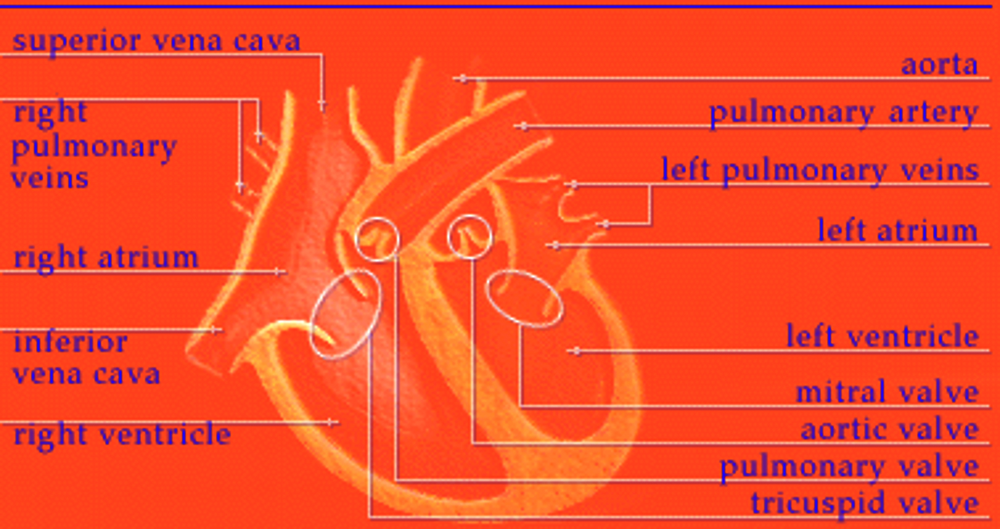

Let's get straight to the heart of the matter—the heart's job is to move blood. Day and night, the muscles of
your heart contract and relax to pump blood throughout your body. When blood returns to the heart, it follows a
complicated pathway. If you were in the bloodstream, you would follow the steps below one by one.
Oxygen-poor blood (shown in blue) flows from the body into the right atrium.
Blood flows through the right atrium into the right ventricle.
The right ventricle pumps the blood to the lungs, where the blood releases waste gases and picks up oxygen.
The newly oxygen-rich blood (shown in red) returns to the heart and enters the left atrium.
Blood flows through the left atrium into the left ventricle.
The left ventricle pumps the oxygen-rich blood to all parts of the body.

Amazing Heart Facts
Your heart beats over 100,000 times per day
Your heart pumps about 1.5 gallons of blood every minute
There are 60,000 miles of blood vessels in your body
The average heartbeat of a woman is about 8 beats a minute faster than a man’s heartbeat
An adult heart is about the size of 2 hands clasped together